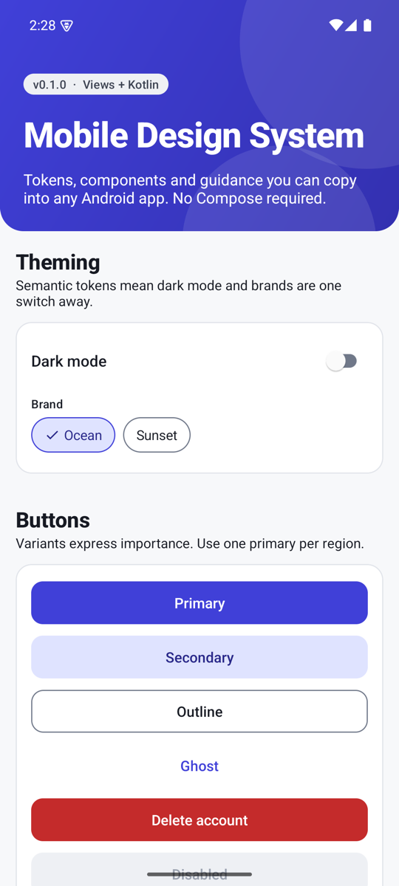
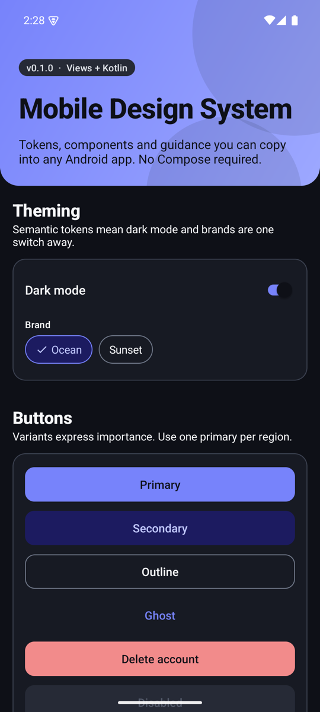
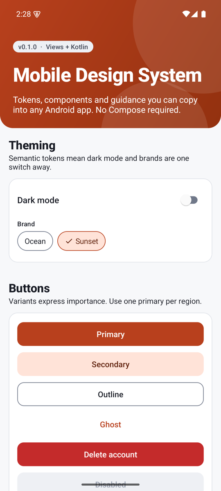

Design systems on Android · Series · Part 2 of 6
Design tokens on Android: three tiers, dark mode and swappable brands
Tokens are the part of a design system that nobody sees and everybody depends on. Get them right and a dark mode, a second brand and a contrast fix each become a small edit. Get them wrong and every component grows its own colour logic. This part shows a three-tier token design, the exact Android resources that implement it, and the small traps that catch people on the way.
Working code. Everything in this post exists and runs in the reference repository: github.com/liconrepo/MobileDesignSystem. Clone it and follow along; the docs are also published at liconrepo.github.io/MobileDesignSystem.
Files for this part:
- Three tiers: primitive (raw values), semantic (roles), theme attributes (what components read).
- A tier may only reference the tier directly above it. Components never see a hex code.
- Dark mode is the same semantic names with different values in
values-night. - A brand is a short theme overlay that re-points a few roles.
- Check contrast with arithmetic, not by eye. A brand colour that looked fine failed at 4.09:1 and had to be darkened.
The problem tokens solve
Imagine a button that sets its fill to #4040D8. Now the designer wants dark mode, then a second brand, then a bit more contrast. Every place that typed the hex has to change, and every one has to remember a dark variant. Tokens add a layer of names between "what it means" and "what it looks like", so only the second changes.
Tier 1: primitive tokens
Primitives are raw values with no meaning attached: a ramp of neutrals, a ramp for the brand, and a ramp for each status colour. They live in mds_palette.xml and nothing outside the semantic tier may reference them.
<color name="mds_palette_neutral_900">#171A23</color>
<color name="mds_palette_neutral_950">#0E1017</color>
<color name="mds_palette_ocean_400">#7783FB</color>
<color name="mds_palette_ocean_600">#4040D8</color>
<color name="mds_palette_ocean_700">#3330B0</color>The names carry a number (the step in the ramp), never a purpose. "Ocean 600" can become the primary colour today and a link colour tomorrow without the name lying.
Tier 2: semantic tokens
Semantic tokens are named for the job they do. This is the tier designers and developers talk in: primary, surface, on surface muted, danger container. The same names exist twice, once for light and once for dark, and only the values differ.
<color name="mds_color_surface">@color/mds_palette_neutral_0</color>
<color name="mds_color_on_surface">@color/mds_palette_neutral_900</color>
<color name="mds_color_primary">@color/mds_palette_ocean_600</color>
<color name="mds_color_on_primary">@color/mds_palette_neutral_0</color><color name="mds_color_surface">@color/mds_palette_neutral_900</color>
<color name="mds_color_on_surface">@color/mds_palette_neutral_50</color>
<color name="mds_color_primary">@color/mds_palette_ocean_400</color>
<color name="mds_color_on_primary">@color/mds_palette_neutral_950</color>Notice the pairing. Every role that is a fill has an on_ partner for the content that sits on it. That pairing is what makes contrast a property you can verify per pair, instead of a feeling you have per screen.
Dark mode is not "invert everything". The primary shifts from step 600 to step 400, and the text on it flips from white to near-black, because a dark theme needs lighter accents to stay readable against a dark surface.
Tier 3: theme attributes
Components should not read colour resources directly, because the resource can change when a brand overlay is applied. They read theme attributes, which resolve against whatever theme the view is inflated with. Declare the attribute once, map it in the theme:
<attr name="mdsColorPrimary" format="color" />
<style name="Theme.Mds" parent="Theme.AppCompat.DayNight.NoActionBar">
<item name="mdsColorPrimary">@color/mds_color_primary</item>
<item name="mdsColorOnPrimary">@color/mds_color_on_primary</item>
...
</style>Then one tiny helper resolves an attribute to a colour in Kotlin. It is the only door components use:
@ColorInt
public fun Context.mdsColor(@AttrRes attr: Int): Int {
val value = TypedValue()
check(theme.resolveAttribute(attr, value, true)) {
"Theme attribute ${resources.getResourceName(attr)} is not set. " +
"Apply Theme.Mds (or a child) to this context."
}
return value.data
}The check is deliberate. If an app forgets to use Theme.Mds, you want a message that says exactly that, not a silent black button.
The theme also maps the same attributes onto the framework ones (colorPrimary, android:textColorPrimary, android:windowBackground), so an unstyled TextView or EditText agrees with the system without any extra work.
A second brand in five lines
Because components read roles through the theme, a brand is a handful of overridden attributes. This is the complete Sunset brand:
<style name="ThemeOverlay.Mds.Sunset" parent="">
<item name="mdsColorPrimary">@color/mds_sunset_primary</item>
<item name="mdsColorPrimaryPressed">@color/mds_sunset_primary_pressed</item>
<item name="mdsColorOnPrimary">@color/mds_sunset_on_primary</item>
<item name="mdsColorPrimaryContainer">@color/mds_sunset_primary_container</item>
<item name="mdsColorOnPrimaryContainer">@color/mds_sunset_on_primary_container</item>
</style>The mds_sunset_* colours also exist in values-night, so the brand has a dark variant too. Applying it takes one line, before super.onCreate():
theme.applyStyle(R.style.ThemeOverlay_Mds_Sunset, true)


Status colours (danger, success, warning, info) are deliberately not part of the brand overlay. A red error should stay red whatever the brand, so people do not have to relearn what a colour means.
Checking contrast with arithmetic
The Web Content Accessibility Guidelines (WCAG) define contrast as a ratio of relative luminances: (L1 + 0.05) / (L2 + 0.05), where L is computed from the sRGB channels. Normal text should reach 4.5:1, and non-text parts such as input borders 3:1. You can compute it in a few lines of Python, and it is worth doing for every pair of roles:
def lin(c):
c /= 255
return c / 12.92 if c <= 0.03928 else ((c + 0.055) / 1.055) ** 2.4
def lum(hexcode):
r, g, b = (int(hexcode[i:i+2], 16) for i in (1, 3, 5))
return 0.2126 * lin(r) + 0.7152 * lin(g) + 0.0722 * lin(b)
def contrast(a, b):
hi, lo = sorted((lum(a), lum(b)), reverse=True)
return (hi + 0.05) / (lo + 0.05)Running it on the pairs used here gave these numbers:
| Pair | Ratio | Verdict |
|---|---|---|
| White on Ocean 600 (primary button, light) | 7.14 | Passes |
| Near-black on Ocean 400 (primary button, dark) | 5.81 | Passes |
White on first Sunset try #D9502A | 4.09 | Fails for text |
White on final Sunset #B8401D | 5.54 | Passes |
| Muted text (Neutral 600) on white | 6.81 | Passes |
| Input border (Neutral 500) on white | 4.43 | Passes non-text 3:1 |
| White on Danger 600 | 5.63 | Passes |
The Sunset story is the point. The first orange looked lively and failed on the numbers, so it was darkened until it passed. A designer's eye would have shipped it. One caveat: this checks the colour pairs. It does not replace testing with real users and assistive technology.
Two traps worth knowing
A qualified style replaces the whole style
You might expect values-night/themes.xml to override only the items it lists. It does not: the night version of Theme.Mds would replace the whole style, silently dropping every other item. The fix is to keep a single complete theme and move per-mode differences into resources that the theme references. For example, the light or dark status bar icons come from a boolean:
<bool name="mds_is_light">true</bool> <!-- values -->
<bool name="mds_is_light">false</bool> <!-- values-night -->
<item name="android:windowLightStatusBar">@bool/mds_is_light</item>Colours that mean something stay put
It is tempting to let brands recolour everything. Resist it. The five attributes in the overlay above are the whole brand contract. Everything else, especially status colours, is shared.
Try it yourself
- Run
./gradlew :sample:installDebugand open the Perceptual tab. Compare light and dark. - Change
mds_sunset_primaryto a colour of your own, run again, and check it with the Python function above. - Add a new role end to end: palette entry, semantic entry in both folders, attribute, theme mapping. Follow
docs/tokens.mdin the repo.
| Term | In plain words |
|---|---|
| Primitive token | A raw value in a ramp, with no meaning attached. |
| Semantic token | A value named for its job, such as primary or surface. |
| Theme attribute | An ?attr/ name resolved against the current theme. |
| On-colour | The content colour that sits on a fill, such as on_primary. |
| Theme overlay | A small style layered over a theme to change a few attributes. |
| Contrast ratio | How different two colours are in brightness, from 1:1 to 21:1. |